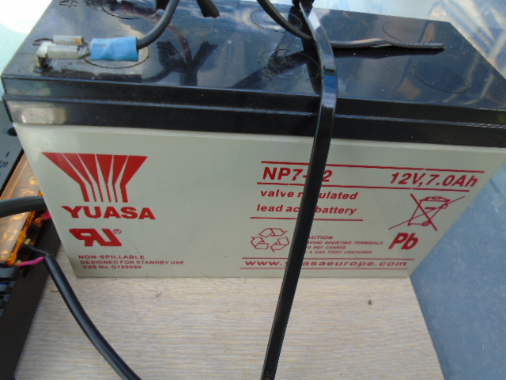
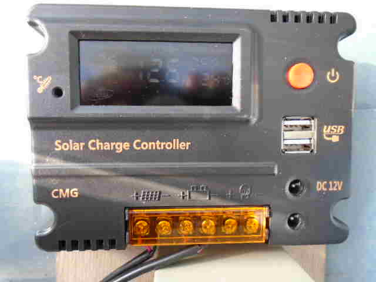
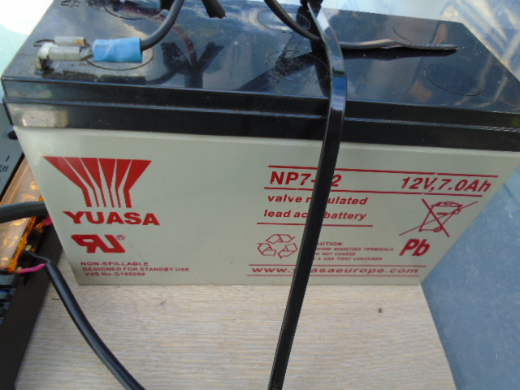
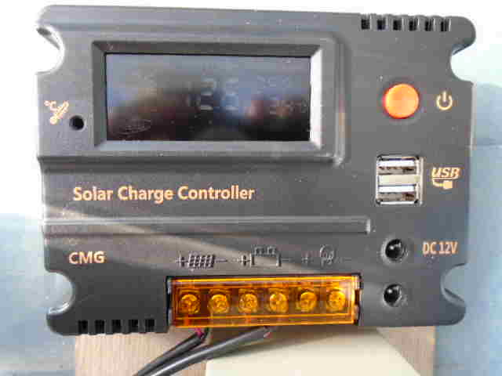

Greening Urban Environments
Portable Solar Power System
Portable Solar Power System
The objective of this project was to produce a simple small portable solar power system which can be used to independently power all sorts of small electronic devices (at USB 5 volts) and other devices (e.g. LED lights, irrigation valves) at 12 volts. A solar regulator takes the output from a solar panel to control the charging of a battery, but also provides a 5 volt and a 12 volt output for powering a range of useful GutterGrowing devices.
Currently this unit is being used to provide independent power for sensors which check the operation of a GutterGrowing system and provide warning messages (or mesages to a mobile phone) if a problem occurs (soon to be written up once project has been completed).
The solar power unit packs into an easily carriable waterproof container so that it can be moved to any location where small amounts of 5 volt and 12 volt power are required.
What you need:
-
Small 12v solar panel
-
Small 12v sealed rechargable battery (normally lead acid)
-
Solar regulator with 12v and 5v (USB type) output
-
Waterproof carry container with lid
 


